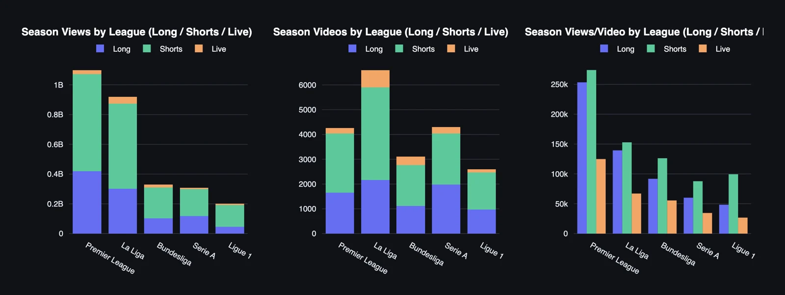

Research Hub/The season on YouTube
YouTube Football Tracker · 2026/27
Since 1 July the 101 club and league channels of the five big European leagues have published 21,001 videos on YouTube and collected 2.86 billion views, and the Premier League has 1.1 billion of them from 4,287 videos, La Liga 920.0 million from 6,626, the Bundesliga 329.7 million from 3,140, Serie A 308.6 million from 4,334 and Ligue 1 199.0 million from 2,614. Per upload that is 258.4 thousand views in England, 139.4 thousand in Spain, 105.9 thousand in Germany, 76.8 thousand in France and 71.9 thousand in Italy, so the league that publishes most earns second most, and the league that publishes second most earns least.

Shorts carry all five, at 59% to 75% of the views, La Liga leads on engagement at 2.91% and the Premier League sits last at 1.80%, and the shortest Shorts and the shortest long-form clips earn the most per video everywhere. The cross-league page sets the five side by side, and each league has its own page below, club by club and chart by chart, with the biggest videos of the season at the end of each one.
The Premier League earns three and a half times per video what Serie A earns from the same number of uploads, La Liga publishes most and Barcelona is the biggest channel in Europe, and the Shorts under 13 seconds and the clips under three minutes travel furthest in every league. The five leagues side by side, chart by chart, from the first 106 days.
15 October 2026 · 106 days of the seasonThe league channel sets the pace with Shorts that average close to a million views, Manchester City owns long-form, and the five most consistent channels are the five biggest. Then the top 100, where goalkeepers rule and a Brighton Short with 6.3 million views and 35 comments asks a question of its own.
15 October 2026 · 106 days of the seasonBarcelona and Real Madrid take 58% of the views, the league channel owns long-form with half of all the long-form views in La Liga, and Sevilla gets 96% of its views from Shorts. Rayo Vallecano has published 22 videos in 106 days, and Real Madrid's firework Short is the most-watched video of the season.
15 October 2026 · 106 days of the seasonBayern takes almost half of all Bundesliga views from fewer videos than the league channel, the clubs stream more than any other league and get the least for it, and the biggest video of the season is a referee's microphone. The smaller clubs win on engagement, publish on the night and vanish for weeks at a time.
15 October 2026 · 106 days of the seasonJuventus sets the pace on Shorts, the league channel owns long-form, Inter publishes more than anyone and gets less per video, and Napoli goes silent for most of the season. Thirteen charts on channels, four on the season's biggest videos.
15 October 2026 · 106 days of the seasonPSG takes 70% of the views and the whole of the top eleven, the league channel owns long-form, and nine clubs are silent on more than half the days of the season. Ligue 1 on YouTube, chart by chart, from the first 106 days.
15 October 2026 · 106 days of the season